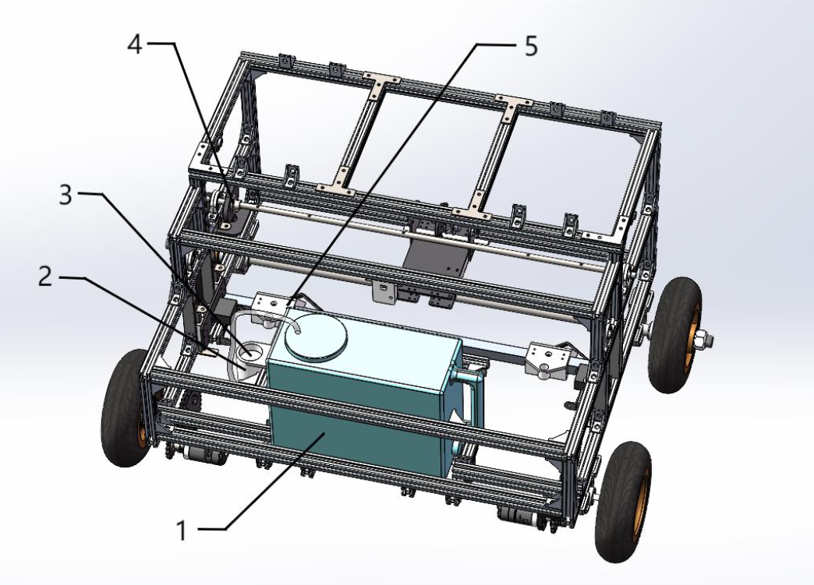
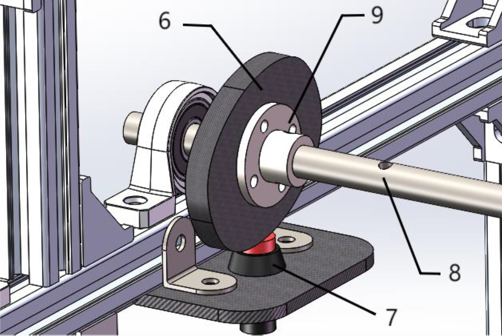
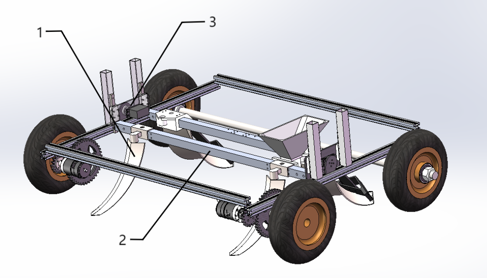
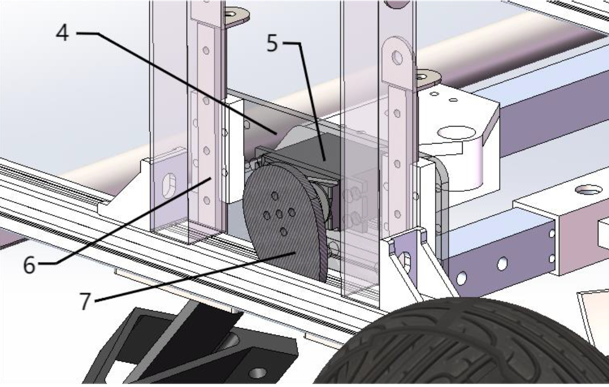
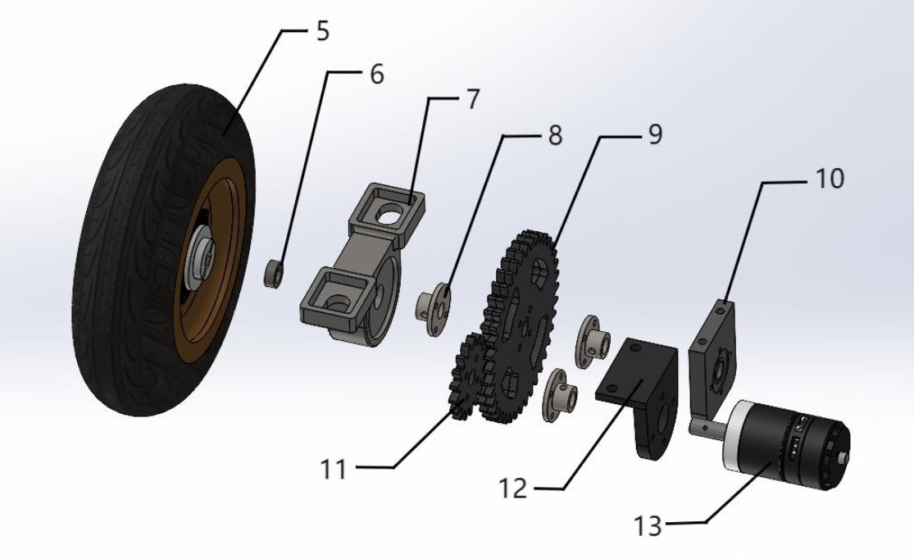
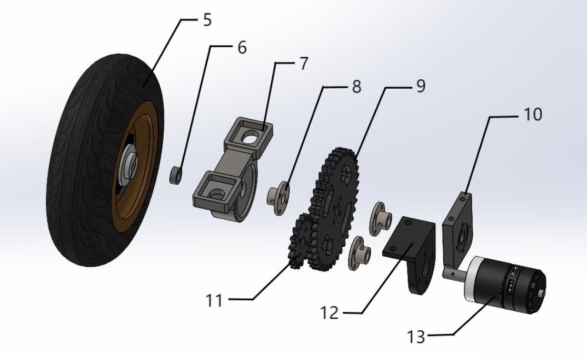
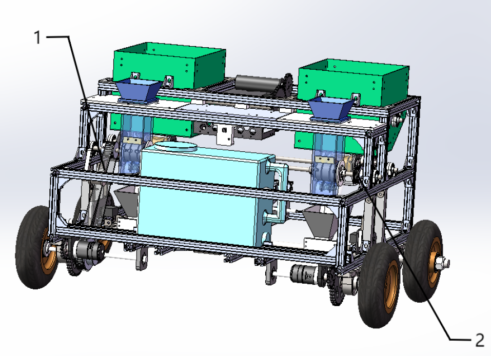

HBUT-全自动薏米种植机
欢迎来到湖北工业大学全自动薏米种植施肥机项目的介绍页面！本项目旨在开发一款高效、智能的薏米种植施肥机，以提升农业生产效率，减少人力成本，并促进可持续农业发展。本设备专为薏米种植设计，集播种、施肥、浇水、开沟、覆土于一体，适用于复杂地形环境，是传统农业向现代化、智能化转型的重要工具。

一、研制背景与意义
1.1 研制背景
薏米的价值与市场需求：薏米是我国最古老的作物之一，被誉为"禾本科植物之王"。现代研究发现薏米具有抗肿瘤、降血糖、降血压、助消化、镇痛、抗炎、清热消暑、美容等多种功效，在临床医学、化妆品研发及食品加工领域有广泛应用。随着健康食品市场不断扩大，对高品质薏米的需求日益增长，传统种植方式已难以满足规模化生产需求。
生长环境特殊性：薏米喜温暖湿润气候，耐涝不耐旱，多生长于山谷溪沟、丘陵山地等复杂地带。传统大型农业机械难以适应这种地形条件，导致薏米种植仍大量依赖人工，生产效率低下。
现有设备局限性：目前市场上的小型播种机多为手推式或外带动力，自动化水平低，仍需大量人工操作。同时，这些设备功能单一，无法同时完成播种、施肥、浇水等多项作业，效率不高，无法满足大规模生产的需求。
1.2 作品意义
- 提高生产效率和质量："薏"帆"丰"顺-薏米自动播种施肥机以其巧妙的结构设计及齐全功能，能够按照薏米播种所需间距、肥量、湿度进行整套播种流程。通过自动化和物联网技术，极大节省播种时间，提高播种效率。机器各传动机构保证播种一致性，提高薏米发芽率，进而提升播种质量。
- 降低劳动成本：作为一款自动播种施肥机，从肥料搅拌、行进、播种施肥到洒水均可通过物联网网页远程操作，界面友好，操作简便。用户只需下达指令即可开始高效播种，显著降低人工劳动成本。
- 适应复杂地形：本设备专为薏米生长环境设计，可在丘陵山地等复杂区域进行播种生产，充分适应薏米播种环境，提高播种生产的覆盖范围和灵活性。
- 推动智慧农业发展：本产品搭载物联网数字孪生技术，将农机重要数据赋值到物联网数据可视化大屏中。后期计划加入5G与定位技术，顺应时代发展潮流，推动农业生产智能化，助力智慧农业发展。
二、总体设计方案
本机器采用一体化设计理念，将播种、施肥、浇水、开沟、覆土五大功能模块有机整合。通过创新的皮带联动系统，各机构协同工作，确保播种作业的连续性和高效性。设备采用模块化设计，便于维护和升级，整体结构紧凑，适应复杂地形作业需求。控制系统基于STM32F446主控芯片，配合ESP32 WiFi-蓝牙核心板，实现智能化控制和远程监控。

三、主要结构设计
3.1 播种机构
播种机构由种子桶和种子桶顶盖连接组成，每个容器可容纳400g种子，两个容器即可满足半亩地种植需求。内部结构包括法兰联轴器、法兰轴承固定件、法兰轴承、薏米种子挡板、种子播种器和种子拨片。通过10mm钢轴串联，法兰联轴器与种子播种器连接，法兰轴承限制播种器移动并减少旋转摩擦。车轮周长约60cm，通过2:1传动比，精准控制每次播种间距约15cm。种子播种器上同一直线设有两个仅容1颗薏米种子的凹槽，种子挡板确保每次下落两颗种子，种子拨片防止大颗种子卡槽。
3.2 施肥机构
施肥机构由肥料箱、肥料搅拌装置和施肥器组成。肥料箱可容纳7.5升肥料，由板材和连接件拼接而成。搅拌装置包括肥料搅拌板材、搅拌电机、法兰联轴器、圆柱齿轮和轴等部件。电机带动齿轮传动，使肥料搅拌板材旋转，将各类配比不同的肥料搅拌均匀。施肥器通过同步带与播种机构轴连接，实现1:1传动，确保种子和肥料同时下落。法兰轴承和密封圈设计防止肥料泄漏和卡滞。
3.3 浇水机构
浇水机构包括5L水箱、水泵固定件、水泵及凸轮开关装置。水箱可从机器上取下接水。水泵固定在水箱铝管架子上，通过水管连接至喷头。凸轮开关装置由凸轮、水泵开关和法兰联轴器组成。施肥轴转动带动凸轮旋转，以特定频率按压和松开水泵开关，定量控制水流量。水管末端喷头对准刚播种的薏米种子，在覆土前均匀喷洒，保证种子湿润度，提高发芽率。
 3.4 开沟与覆土机构
开沟机构利用凸轮结构控制升降，在田间工作时降下，非工作时升起。特殊形状的开沟器能在土壤中开出最适合薏米种子播种的宽度和深度。机构由犁头尖、铝管及凸轮升降装置组成，凸轮升降装置包括舵机固定板、舵机、滑块滑轨和凸轮。覆土机构由覆土器、覆土器固定件和铝管组成，与开沟机构类似通过凸轮转动完成升降。覆土器特殊形状能最大限度将开沟器开出的土向前推动，覆盖在种子和肥料上，为薏米生长提供适宜环境。
 3.5 行进机构
行进机构是设备动力来源，主要由8寸车轮、20mm轴、轴承座和前轮驱动系统组成。后轮通过轴连接并用轴承座固定。前轮驱动系统包括车轮、止推环、轴承座、法兰联轴器、圆柱齿轮、电机固定件和3508电机。电机运转时通过齿轮传动减速后传递给前轮，驱动机器行进。齿轮传动比经优化设计，保证机器以合适速度稳定作业，适应田间地形和土壤条件。
 

3.6 联动设计
设备利用皮带进行联动设计，同步带将行进机构与播种机构联动（齿数比2:1），播种机构与施肥机构联动（齿数比1:1）。整个联动系统传动比设置为2:1:1。八寸轮胎周长约63.84cm，薏米播种间距15cm，轮胎转一圈带动播种器旋转两周，连续播种8颗薏米种子。此设计确保种子间距15cm，并在播种同时施定量肥料和少量水，为薏米种子提供最佳生长条件。皮带传动具有缓冲减震、噪音低、维护成本低、传动效率高、安装调整方便和传动比范围广等优点。
四、控制系统
硬件选型：主控采用STM32F446达妙开发板，具备两个CAN接口、两个高速RS485接口、USB接口及SBUS、PWM等丰富接口。配套ESP32 WiFi-蓝牙核心板、大疆M3508减速电机、C620电调、24V5300mAh格氏电池、5V电磁继电器和24V-MD36带编码器直流减速电机。格氏电池具有高倍率、大功率、低内阻特点，为电机提供强大持久电源系统。5V继电器控制24V直流减速电机，实现对搅拌装置驱动。
控制原理：主控通过CAN通信对M3508进行速度和位置闭环控制，作为驱动轮同时传动给播种装置控制种子下落速度。主控GPIO输出引脚控制5V浇水装置启停和5V继电器开合，驱动24V直流电机控制肥料混合。主控与ESP32-8266控制板通过串口DMA通信控制整机，实现物联网远程控制。可通过手机网页控制和监察车辆状态，实现智能化管理。
五、创新点
- 自动化播种施肥技术：传统薏米播种施肥依赖人工完成，效率低下且易受天气、人为因素影响。本机通过集成播种和施肥模块，实现一体化作业，大大提高作业效率。
- 精准定量控制：根据土壤情况和薏米生长需求，进行精准定量播种和施肥，既避免资源浪费，又保证薏米生长所需养分。通过凸轮结构控制浇水，确保水量适中。
- 环保节能设计：优化机械结构和动力系统，利用皮带联动实现播种、施肥和浇水同步，减少电机使用，降低能耗和环境污染。
- 智能化管理与控制：结合物联网技术和数字孪生技术，实现通过网页远程控制和管理，方便用户随时掌握机器作业状态。
- 适应复杂地形：专为薏米生长环境设计，可在丘陵山地等复杂区域作业，解决传统大型农机无法适应的问题。
六、应用前景分析
随着科技进步和农业现代化发展，集自动播种、施肥和定量浇水于一体的薏米自动播种施肥机正成为农业生产重要工具，应用前景广阔：
- 提高生产效率：自动化完成播种、施肥和浇水等作业，显著提高农业生产效率。相较传统人工操作，机器作业速度更快，减少人为误差，提高播种均匀性和施肥精准度。
- 降低成本：减少人力投入，降低劳动力成本。同时减少种子浪费、肥料过量使用等农业生产过程中的浪费，提高经济效益。
- 促进农业规模化发展：适应大规模薏米种植需求，为农业规模化发展提供有力支持。高效精准作业使农业生产更加集中高效，推动农业规模化、集约化发展。
- 提高产品品质：通过精准播种、施肥和浇水，为薏米生长提供良好环境，提高产品品质。精准作业减少品质差异，提高产品均匀性和一致性，更符合市场需求。
- 推动农业现代化进程：本设备应用是农业现代化进程中的重要一环。随着机器换人趋势加速，农业机械化、智能化水平不断提高，本设备将在农业生产中发挥更重要作用，推动农业生产转型升级，促进农业现代化全面发展。
七、未来开发构想
为进一步提升设备性能和智能化水平，未来计划加入以下技术：
- 5G通信技术应用：集成5G通信技术，实现与云端服务器的实时数据传输和交互。机器可将作业数据、环境参数等信息实时上传至云端，供农户或农业专家分析决策；云端服务器可根据实时数据为机器提供最优作业策略和调整指令，实现真正的智能化、自适应作业。
- GPS定位系统应用：引入GPS定位系统，为设备提供精确的定位功能。机器可根据GPS信号确定自身位置，实现精准导航和作业。通过与地图数据结合，可对作业区域进行精确划分，确保每块土地都能得到均匀、高效的作业处理。
- 自动规划路线功能：基于GPS定位和地图数据，设备应具备自动规划路线能力。可根据作业需求和土地状况，自动计算出最优作业路线，确保在有限时间内完成最大面积作业任务。同时可根据实时环境数据进行路线调整，应对不同作业场景和需求。
项目信息
参赛项目：国际大学生智能农业装备创新大赛
组别：本科组
参赛类别：农业机械
参赛学生：张俊杰、徐顺园、夏成辉、代治江、李铭龙
指导教师：许超斌
日期：二〇二六年一月
总制作成本：约1577.87元（不含研发成本）